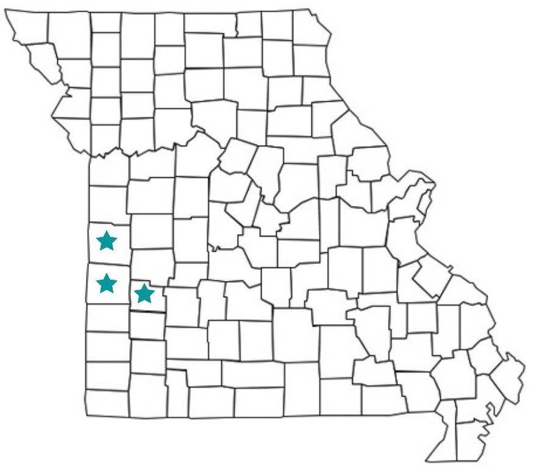

Projects and Experience
Certifications Earned
At my current career I have became certified in many programs. In order to become certified in these programs you must attend an in-depth training. After the training most programs require that you teach the program at least on time a year.
Chronic Disease Self-Management
Chronic Pain Self-Management
Diabetes Self-Management
Tai Chi for Arthritis
Walk with Ease
Workplace Chronic Disease Self-Management
Grants Awarded
AmeriCorp Grant
AmeriCorps Grant: Wrote and submitted a federal grant in Fall
2020. The grant is to support volunteers 55 and older, in-service
project activities including a reading buddy program with youth
in the community, 4-H and STEM activities, community gardens,
weekend backpack program, summer readiness backpacks, and
many more. The grant was awarded and began in April 2021.
Awarded: April 2021
Amount per year: $75,000
Number of Years: 3
Potential amount: $250,000
Walk With Ease Grant
Walk With Ease:a grant that provided funds for me
to get trained in an evidence-based program.
Awarded: June 2019
Amount of grant: $500
Counties I Serve in Missouri with Nutrition and Health Programming
I provide nutrition and health programs to three counties in Missouri. I partner with many stakeholders and orgnanizations in the communities I serve. I teach classes involving Diabetes, Healthy Cooking Classes, Excercise Classes,
Fall Prevention Class, and many more! Some classes we are also able to create! This past year some of my colleagues and I created a Spin Club for International Foods. The program is design to teach kids about other countires and they get to make a recipe from that country.
Click Here for Example of International Foods Spin Club Packet
The three counties I serve include:
Bates County
Cedar County
Vernon County
